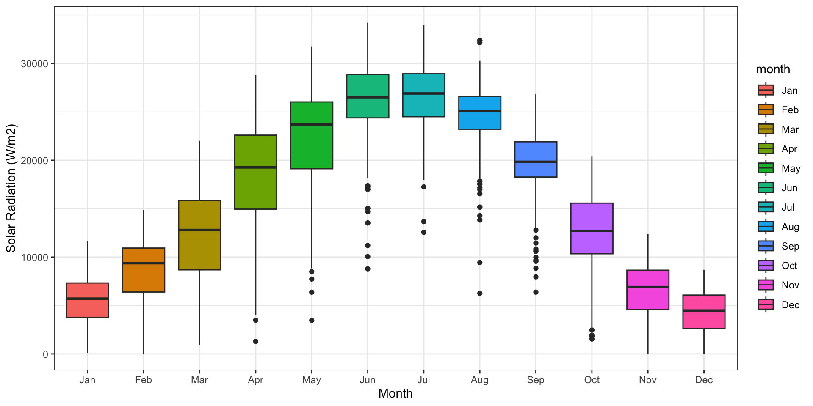
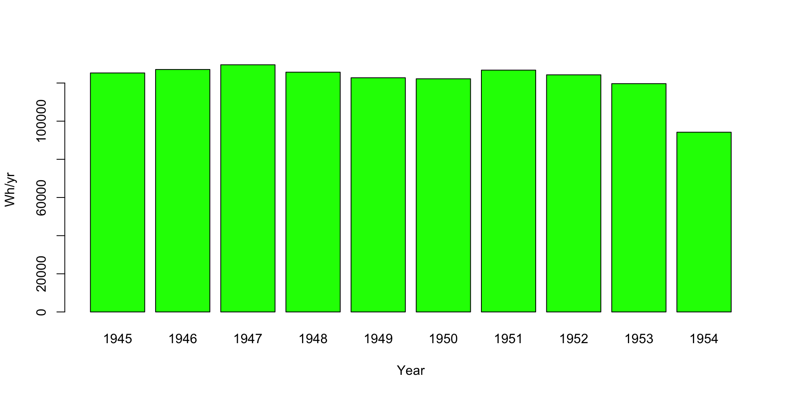
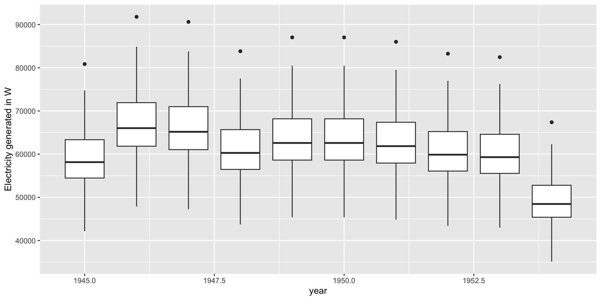
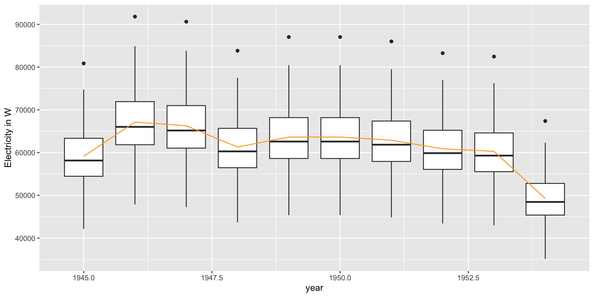
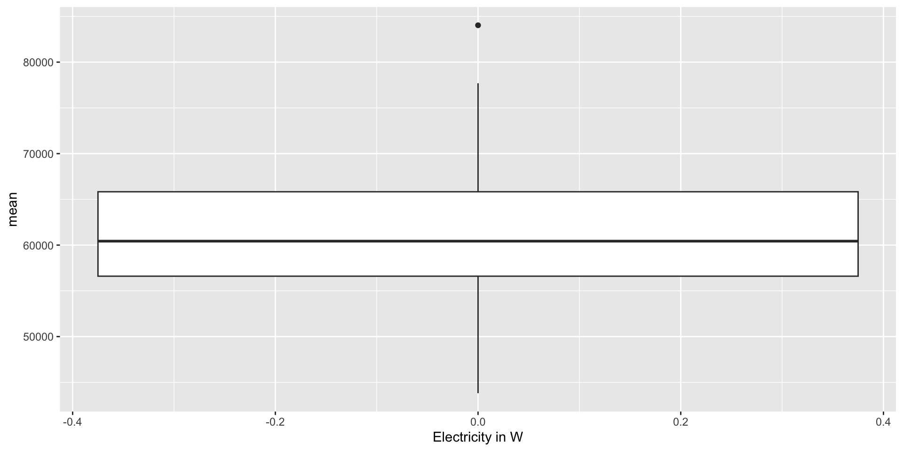
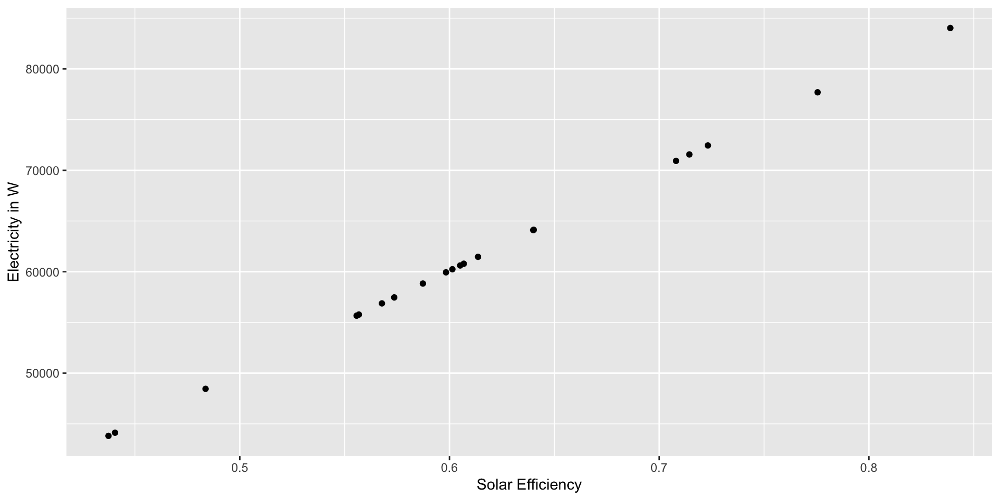

function (area, eff = 0.8, PR = 0.75, solar, clr = "blue", eunits = "J",
etype = "both", g = TRUE, ethresh = 10000)
{
if (etype == "diffuse") {
solar$total <- solar$Kdown_diffuse
}
else {
if (etype == "direct") {
solar$total <- solar$Kdown_direct
}
else {
solar$total <- solar$Kdown_direct + solar$Kdown_diffuse
}
}
adjusteff <- function(x, ethresh, eff) {
result <- ifelse((x > ethresh), eff * x, x * eff * (max(0,
x/ethresh)))
return(result)
}
solar <- solar %>% mutate(Kadj = adjusteff(total, ethresh = ethresh,
eff = eff))
annualsolar <- solar %>% group_by(year) %>% dplyr::summarize(Kadj = sum(Kadj))
annualsolar$elect <- area * PR * annualsolar$Kadj
ylbs <- "kJ/yr"
if (eunits == "W") {
annualsolar$elect <- annualsolar$elect * 0.278
ylbs <- "Wh/yr"
}
if (g) {
barplot(annualsolar$elect, names = annualsolar$year,
col = clr, ylab = ylbs, xlab = "Year")
}
return(list(annual = annualsolar[, c("year", "elect")], mean = mean(annualsolar$elect)))
}Steps for building models
STEPS: Modeling for Problem Solving in ES
Clearly define your goal (a question you want to answer, hypothesis you want to test, prediction you want to make) - as precisely as possible
Design or Select your model
Implement the model
Evaluate the model and quantify uncertainty
Apply the model to the goal
Communicate model results
Steps: Design and Implement your model
Diagram your model
Translate diagram into a mathematical representation
Choose programming language
Define inputs (data type, units)
Define output (data type, units)
Define model structure
Write model
Document the model (meta data)
Test model
Building Models
Modularity! (Functions)
The basic building blocks of models
Functions are the “boxes” of the model
- the transfer function that takes inputs and returns outputs
- most languages have a function library (e.g. R, Python, C++)
More complex models
- made up of multiple functions;
- boxes with arrows
- main function that calls other functions, flow control
- nested functions (functions that other functions and control the flow
For each box/function
Decide on
Inputs and parameters
Outputs
Data types, units (time and space aggregation), names should be (use descriptive names)
IMPORTANT
Place each function in its own file (x.R), and put all functions for a given project in R subdirectory
What’s in the box
Often more complicated than a simple single equation (regression results)
So we need to think through steps are - what is connected with what
Diagrams are a good place to start
Modularity - Discrete Tasks
Hierarchical in level of details
Big chunks (coarse detail) -> progressively finer
Note ‘tasks’ that need to be repeated
All tasks should have inputs and outputs

Model design flowcharts
Some model designers uses standard symbols for the different model components

Solar Photovoltaic Model
Design - function that estimates solar pv power given inputs of radiation
Model inputs: solar radiation (daily direct and diffuse)
Model outputs: power generated each year and average power over time
Parameters: panel efficiency, system performance, units, type of array (uses diffuse or not), plot Y/N
Some of these options such as whether to plot determine outputs from the function
AND the type of array to determine whether it uses diffuse radiation, these parameters change how the function/model works
Solar function example as code
Model Code
You need tidyverse, here libraries to run.
Some Data
We will plot to check that the input data makes sense
- look at data
- plot radiation by month
day month year Kdown_direct Kdown_diffuse
1 1 10 1944 9160.645 6723.084
2 2 10 1944 13012.744 5961.513
3 3 10 1944 14080.951 5658.144
4 4 10 1944 11818.719 6257.914
5 5 10 1944 13563.701 5809.291
6 6 10 1944 11653.709 5652.240Plot
# plot
# lets make months names rather than labels
sierraczosolar$month <- factor(
sierraczosolar$month,
levels = 1:12,
labels = month.abb
)
# now plot
ggplot(
sierraczosolar,
aes(x = month, y = (Kdown_direct + Kdown_diffuse), fill = month)
) +
geom_boxplot() +
labs(x = "Month", y = "Solar Radiation (W/m2)") +
theme_bw()
Run the model with this data
# run the model
solarpv(
area = 0.1,
solar = sierraczosolar,
clr = "green",
eunit = "W",
g = FALSE
)$annual
# A tibble: 11 × 2
year elect
<int> <dbl>
1 1944 23218.
2 1945 125269.
3 1946 127086.
4 1947 129557.
5 1948 125672.
6 1949 122743.
7 1950 122215.
8 1951 126753.
9 1952 124288.
10 1953 119670.
11 1954 94208.
$mean
[1] 112789# run and save results - but don't plot
site1 <- solarpv(
area = 0.1,
solar = sierraczosolar,
clr = "green",
eunit = "W",
g = FALSE
)
site1$mean[1] 112789# A tibble: 11 × 2
year elect
<int> <dbl>
1 1944 23218.
2 1945 125269.
3 1946 127086.
4 1947 129557.
5 1948 125672.
6 1949 122743.
7 1950 122215.
8 1951 126753.
9 1952 124288.
10 1953 119670.
11 1954 94208.On your own
- read through function code
- run the model with the data
- change parameter and re-run
- turn graphing on
Visual Checking
- what issue jumps out - what might be the cause?
- how would you fix this?

Try changing an input and see what you get!
Playing with models
We often build models to try different options
Model inputs: solar radiation (daily direct and diffuse)
Model outputs: power generated each year and average power over time
Parameters: panel efficiency, system performance, units, type of array (uses diffuse or not), plot Y/N
Informal Sensitivity Analysis
What happens when we vary parameters?
Informal - just try varying parameters
decide which parameter(s) and what range to vary the parameter over - what is the uncertainty? (+- 15% )?
figure out how to efficiently run your model over parameter variation and save results as you go
analyze the sensitivity (simply plotting for now)
Helpful tools
Sampling
- runif,
- rnorm (sampling from uniform and normal distributions)
- seq (for creating a sequence of numbers)
Repeating
- in R - purrr package, also apply family of function
- classic for loops
If you need it a good source to review working with purrr to extract items from list and repeat operations
Example
- we will start by using map
- which “maps* a function (runs it ) for a list of values,
- we can also use these function to extract values from a list
R code for informal sensitivity
We are not sure what the efficiency of the PV array is
How important is this parameter to the results?
How we do this depends on what we know about efficiency
- manufacturer reports mean and standard deviation*
- manufacturer provides a range
Mean 0.6 standard deviation of 0.1
R code
library(tidyverse)
# first come up with varying values for efficiency
# if we don't know efficiency exactly , lets try 20 samples
eff <- rnorm(mean = 0.6, sd = 0.1, n = 20)
# use map from purrr to run model for all values of eff
# notice how map adds the one parameter that is missing from the input list
site2 <- eff %>%
map(
~ solarpv(
area = 0.1,
solar = sierraczosolar,
clr = "green",
eunit = "W",
g = FALSE,
etype = "direct",
eff = .x
)
)
head(site2)[[1]]
[[1]]$annual
# A tibble: 10 × 2
year elect
<int> <dbl>
1 1945 58496.
2 1946 66411.
3 1947 65561.
4 1948 60645.
5 1949 62962.
6 1950 62959.
7 1951 62220.
8 1952 60230.
9 1953 59653.
10 1954 48749.
[[1]]$mean
[1] 60788.64
[[2]]
[[2]]$annual
# A tibble: 10 × 2
year elect
<int> <dbl>
1 1945 59151.
2 1946 67155.
3 1947 66295.
4 1948 61324.
5 1949 63667.
6 1950 63664.
7 1951 62917.
8 1952 60904.
9 1953 60321.
10 1954 49295.
[[2]]$mean
[1] 61469.38
[[3]]
[[3]]$annual
# A tibble: 10 × 2
year elect
<int> <dbl>
1 1945 61712.
2 1946 70063.
3 1947 69167.
4 1948 63980.
5 1949 66424.
6 1950 66421.
7 1951 65642.
8 1952 63542.
9 1953 62933.
10 1954 51429.
[[3]]$mean
[1] 64131.55
[[4]]
[[4]]$annual
# A tibble: 10 × 2
year elect
<int> <dbl>
1 1945 57972.
2 1946 65816.
3 1947 64974.
4 1948 60102.
5 1949 62398.
6 1950 62395.
7 1951 61663.
8 1952 59691.
9 1953 59119.
10 1954 48312.
[[4]]$mean
[1] 60244.23
[[5]]
[[5]]$annual
# A tibble: 10 × 2
year elect
<int> <dbl>
1 1945 61690.
2 1946 70038.
3 1947 69142.
4 1948 63957.
5 1949 66401.
6 1950 66398.
7 1951 65619.
8 1952 63519.
9 1953 62911.
10 1954 51411.
[[5]]$mean
[1] 64108.61
[[6]]
[[6]]$annual
# A tibble: 10 × 2
year elect
<int> <dbl>
1 1945 55299.
2 1946 62782.
3 1947 61978.
4 1948 57331.
5 1949 59521.
6 1950 59518.
7 1951 58820.
8 1952 56938.
9 1953 56393.
10 1954 46084.
[[6]]$mean
[1] 57466.46Data Structures
challenge in sensitivity analysis is often what data structure to use
organize parameter variation and result variation
R often returns lists - but not so easy for organization
ask yourself what you want to do with the data, then put in a structure that will make this easy
e.g two different data frames
- plot variation in mean annual electricity by eff
- plot variation in each year due to variation in eff
- a data frame is often the best structure for graphing
List of 20
$ :List of 2
..$ annual: tibble [10 × 2] (S3: tbl_df/tbl/data.frame)
.. ..$ year : int [1:10] 1945 1946 1947 1948 1949 1950 1951 1952 1953 1954
.. ..$ elect: num [1:10] 58496 66411 65561 60645 62962 ...
..$ mean : num 60789
$ :List of 2
..$ annual: tibble [10 × 2] (S3: tbl_df/tbl/data.frame)
.. ..$ year : int [1:10] 1945 1946 1947 1948 1949 1950 1951 1952 1953 1954
.. ..$ elect: num [1:10] 59151 67155 66295 61324 63667 ...
..$ mean : num 61469
$ :List of 2
..$ annual: tibble [10 × 2] (S3: tbl_df/tbl/data.frame)
.. ..$ year : int [1:10] 1945 1946 1947 1948 1949 1950 1951 1952 1953 1954
.. ..$ elect: num [1:10] 61712 70063 69167 63980 66424 ...
..$ mean : num 64132
$ :List of 2
..$ annual: tibble [10 × 2] (S3: tbl_df/tbl/data.frame)
.. ..$ year : int [1:10] 1945 1946 1947 1948 1949 1950 1951 1952 1953 1954
.. ..$ elect: num [1:10] 57972 65816 64974 60102 62398 ...
..$ mean : num 60244
$ :List of 2
..$ annual: tibble [10 × 2] (S3: tbl_df/tbl/data.frame)
.. ..$ year : int [1:10] 1945 1946 1947 1948 1949 1950 1951 1952 1953 1954
.. ..$ elect: num [1:10] 61690 70038 69142 63957 66401 ...
..$ mean : num 64109
$ :List of 2
..$ annual: tibble [10 × 2] (S3: tbl_df/tbl/data.frame)
.. ..$ year : int [1:10] 1945 1946 1947 1948 1949 1950 1951 1952 1953 1954
.. ..$ elect: num [1:10] 55299 62782 61978 57331 59521 ...
..$ mean : num 57466
$ :List of 2
..$ annual: tibble [10 × 2] (S3: tbl_df/tbl/data.frame)
.. ..$ year : int [1:10] 1945 1946 1947 1948 1949 1950 1951 1952 1953 1954
.. ..$ elect: num [1:10] 56616 64277 63455 58697 60939 ...
..$ mean : num 58835
$ :List of 2
..$ annual: tibble [10 × 2] (S3: tbl_df/tbl/data.frame)
.. ..$ year : int [1:10] 1945 1946 1947 1948 1949 1950 1951 1952 1953 1954
.. ..$ elect: num [1:10] 53673 60936 60156 55646 57771 ...
..$ mean : num 55777
$ :List of 2
..$ annual: tibble [10 × 2] (S3: tbl_df/tbl/data.frame)
.. ..$ year : int [1:10] 1945 1946 1947 1948 1949 1950 1951 1952 1953 1954
.. ..$ elect: num [1:10] 80861 91803 90628 83832 87035 ...
..$ mean : num 84031
$ :List of 2
..$ annual: tibble [10 × 2] (S3: tbl_df/tbl/data.frame)
.. ..$ year : int [1:10] 1945 1946 1947 1948 1949 1950 1951 1952 1953 1954
.. ..$ elect: num [1:10] 54732 62138 61343 56743 58911 ...
..$ mean : num 56878
$ :List of 2
..$ annual: tibble [10 × 2] (S3: tbl_df/tbl/data.frame)
.. ..$ year : int [1:10] 1945 1946 1947 1948 1949 1950 1951 1952 1953 1954
.. ..$ elect: num [1:10] 68865 78183 77183 71395 74123 ...
..$ mean : num 71564
$ :List of 2
..$ annual: tibble [10 × 2] (S3: tbl_df/tbl/data.frame)
.. ..$ year : int [1:10] 1945 1946 1947 1948 1949 1950 1951 1952 1953 1954
.. ..$ elect: num [1:10] 42163 47869 47256 43713 45383 ...
..$ mean : num 43816
$ :List of 2
..$ annual: tibble [10 × 2] (S3: tbl_df/tbl/data.frame)
.. ..$ year : int [1:10] 1945 1946 1947 1948 1949 1950 1951 1952 1953 1954
.. ..$ elect: num [1:10] 42464 48211 47594 44025 45707 ...
..$ mean : num 44129
$ :List of 2
..$ annual: tibble [10 × 2] (S3: tbl_df/tbl/data.frame)
.. ..$ year : int [1:10] 1945 1946 1947 1948 1949 1950 1951 1952 1953 1954
.. ..$ elect: num [1:10] 46625 52934 52257 48339 50185 ...
..$ mean : num 48453
$ :List of 2
..$ annual: tibble [10 × 2] (S3: tbl_df/tbl/data.frame)
.. ..$ year : int [1:10] 1945 1946 1947 1948 1949 1950 1951 1952 1953 1954
.. ..$ elect: num [1:10] 68254 77490 76498 70762 73465 ...
..$ mean : num 70929
$ :List of 2
..$ annual: tibble [10 × 2] (S3: tbl_df/tbl/data.frame)
.. ..$ year : int [1:10] 1945 1946 1947 1948 1949 1950 1951 1952 1953 1954
.. ..$ elect: num [1:10] 58330 66224 65376 60474 62784 ...
..$ mean : num 60617
$ :List of 2
..$ annual: tibble [10 × 2] (S3: tbl_df/tbl/data.frame)
.. ..$ year : int [1:10] 1945 1946 1947 1948 1949 1950 1951 1952 1953 1954
.. ..$ elect: num [1:10] 74760 84877 83791 77508 80469 ...
..$ mean : num 77691
$ :List of 2
..$ annual: tibble [10 × 2] (S3: tbl_df/tbl/data.frame)
.. ..$ year : int [1:10] 1945 1946 1947 1948 1949 1950 1951 1952 1953 1954
.. ..$ elect: num [1:10] 57679 65484 64646 59799 62083 ...
..$ mean : num 59940
$ :List of 2
..$ annual: tibble [10 × 2] (S3: tbl_df/tbl/data.frame)
.. ..$ year : int [1:10] 1945 1946 1947 1948 1949 1950 1951 1952 1953 1954
.. ..$ elect: num [1:10] 53570 60819 60041 55539 57660 ...
..$ mean : num 55670
$ :List of 2
..$ annual: tibble [10 × 2] (S3: tbl_df/tbl/data.frame)
.. ..$ year : int [1:10] 1945 1946 1947 1948 1949 1950 1951 1952 1953 1954
.. ..$ elect: num [1:10] 69717 79152 78139 72280 75041 ...
..$ mean : num 72450NULL year elect
1 1945 58495.56
2 1946 66411.22
3 1947 65561.22
4 1948 60645.28
5 1949 62962.06
6 1950 62959.15Looking at results from informal sensitivity analysis
- Box plots or Violin Plots of Model Output (where box shows effect of parameter uncertainty)
WHY: To see how big the range of output might be relative to “uncertain” parameter range
- Plot Response against parameter value
WHY: To see how the parameter influences the results
- Average across parameter uncertainty
WHY: If you want the one number that is the “best guess” given uncertainty
Variation in annual electricity due to parameter uncertainty
- boxplot
- just need all the annual electricity by year
For any given year, how important is the efficiency?

Add an average line
Why?
Plotting the average value gives more information that helps us make decisions about how many watts we need for the year. Most of the time, we’ll be fine, but if we end up with a low efficiency one year, we’ll be below 40k watts.
# we also might want an average across parameter uncertainty
site2_average <- site2df %>%
group_by(year) %>%
dplyr::summarize(elect = mean(elect))
# now add this to the plot - note that we remove the grouping by using group=1
ggplot(site2df, aes(year, elect, group = year)) +
geom_boxplot() +
labs(y = "Electricity in W") +
geom_line(data = site2_average, aes(year, elect, group = 1), col = "orange")
How does efficiency impact mean annual electricity estimate
- Data structure with eff and mean annual electricity
- X-Y plots
Organize the data
# we could also plot how the mean annual electricity varies with efficiency (eff from above)
site2[[1]]$annual
# A tibble: 10 × 2
year elect
<int> <dbl>
1 1945 58496.
2 1946 66411.
3 1947 65561.
4 1948 60645.
5 1949 62962.
6 1950 62959.
7 1951 62220.
8 1952 60230.
9 1953 59653.
10 1954 48749.
$mean
[1] 60788.64Plot
- how variable is the model output given parameter variation
- how does the variation in parameter impact model output

# or to see what the sensitivity looks like
ggplot(site2_mean, aes(eff, mean)) +
geom_point() +
labs(y = "Electricity in W", x = "Solar Efficiency")
[1] 61449.48To explore on our own, vary efficiency in different ways! Read
Sharing Example R, Data and Rmarkdowns
https://github.com/naomitague/ESM232_EDS230_Examples.git
You can clone this repository and then pull before class to get example code and data
Remember that git does not like having nested repositories - so keep working respoistories in separate directories
Schedule for this week and next
For Thursday
- Start work on Assignment 2 (see below)
- Read through InformalSensitivity.Rmd
- Recorded Lecture
- Ojas will review some basics of coding and writing functions in Section
For Next Week
- Assignment 2 due Monday (April 14)
- Assignment 3 given on Tuesday (April 15)
- Assignment 3 due Monday April 21
Working Materials
- Read through InformalSensitivity2.Rmd
- Ojas will review Informal Sensitivity Rmarkdowns in section
- No formal class
ASSIGNMENT 2 Almond Yields
Lobell et al., 2006 used data to build models of tree crop yield for California that captured how climate variation (place and time) might influence yield
Yield anomaly
Climate variables
Assumptions…as you work think about what these are…
Assignment
For this assignment you will work in pairs
Your goal is to implement a simple model of almond yield anomaly response to climate
Inputs: daily times series of minimum, maximum daily temperatures and precipitation
Outputs: maximum, minimum and mean yield anomoly for a input time series
The Lobell et al. 2006 paper will be the source for the transfer function that you will use in your model; specifically look at the equations in table 2.
What you will do - Model Set Up
Draw diagram to represent your model - how it will translate inputs to outputs, with parameters that shape the relationship between inputs an outputs - on your diagram list what your inputs, parameters and outputs are with units
Implement your diagram as an R function
Here are some ideas to think though. The climate data is going to need to be processed (e.g note that the model uses climate data from a particular month - you have ALL of the climate as daily data). Here are two possible model outlines to follow
● Almond_model <- function(clim_var1, clim_var2, parameters){……}
● Almond_model <- function(clim, parameters){……}
The first example is where the climate variables are separately input into the function - climate data is processed beforehand as part of model set up
The second is where a climate data frame is the input in the function and you extract the useful data from it as part of the model.
You can pick which option you prefer (or try both)
Run the model
- Run your model for the clim.txt data that is posted on Canvas,
clim.txt has the following columns
these 4 columns tell you when climate observations were made
- day
- month
- year
- wy (water year)
the next 3 columns are the climate observations
- maximum (tmax_c) daily temperature
- minimum (tmin_c) daily temperature
- precipitation (precip) on that day in mm
check your work
I will tell you that
- the maximum almond yield anomaly should be approximately 1920 ton/acre
- the lowest almond yield anomaly should be approximately -0.027 ton/acre
- the mean almond yield anomaly should be approximately 182 ton/acre
Notes
There are always multiple ways to code something in R;
Remember that we want to strive for our code being as simple and streamline as possible.
Style counts.
- Make sure you choose meaningful variable names and add comments.
- Include comments at the top of the function to tell the user what the inputs/outputs are and their units and format.
What to hand in on Canvas
Two separate files (or a link to a repository with these files)
- a R file that has your function definition
- a Rmarkdown file that includes your conceptual model (embed as picture) and shows how you applied the function to the test climate data (clim.txt)
Grading Rubric
Conceptual model (20 pts)
- a clear diagram that corresponds with your R function (10 pts)
- inputs and output and parameters shown on the diagram (10 pts)
R Implementation (30 pts)
- correct function implementation (*.R file) (10 pts)
- application of the function to clim.txt (in Rmarkdown file) (10 pts)
- coding practices (clear documentation, informative variables names) (10 pts)